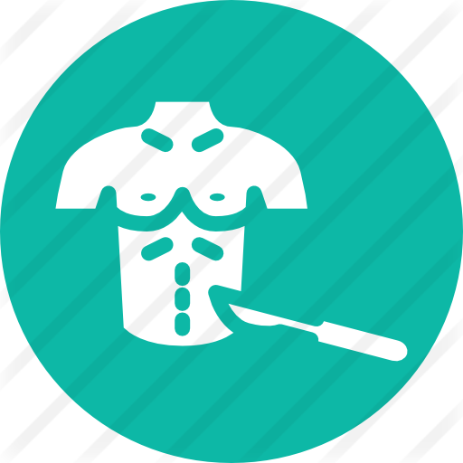

Antes
REUNION CON EL EQUIPO QUIRURGICO:
Antes de la cirugía, usted se reunirá con el cirujano o el equipo quirúrgico.Analizarán su registro médico, realizarán un examen físico y evaluarán la necesidad de cirugía
AUTORIZACION PARA LA CIRUGIA:
Es posible que antes de la cirugía necesite ciertas pruebas. Hable con su médico para saber qué pruebas necesitará. A continuación se indican algunos ejemplos.
PROGRESO:
Mas detalles...
Durante
ANESTICIA LOCAL :
La anestesia local es una inyección que adormece el área donde se necesita la cirugía. La anestesia local se usa para procedimientos que se realizan en el consultorio del médico, como la extirpación de un lunar
ANESTECIA GENERAL:
La anestesia general deja a la persona en un estado de inconsciencia durante un procedimiento mayor. La anestesia general se administra a través de una máscara facial, una aguja intravenosa (i.v.) que se inserta en una vena del brazo o una combinación de ambas. Luego, el anestesista generalmente coloca un tubo en la garganta para ayudar con la respiración, proporcionar oxígeno y, en ocasiones, administrar anestesia. El anestesista controla cuidadosamente la frecuencia cardíaca, la presión arterial y el oxígeno durante la operación. Por lo general, el paciente no está consciente de nada hasta que la anestesia deja de tener efecto después de la operación
PROGRESO:

Mas detalles...
Despues
PROCESO DE RECUPERACION :
Consulte al médico sobre la actividad física después de la cirugía. Es importante que camine en cuanto pueda para favorecer la circulación de la sangre y evitar la formación de coágulos.
- Pida una derivación a un fisioterapeuta, si fuera necesario. La fisioterapia podría ser una parte importante de su recuperación. Puede ayudar a aumentar la fuerza y la flexibilidad, y algunos pacientes pueden comenzar el día siguiente de la cirugía. Es posible que reciba un programa de ejercicios en el hogar, pero es importante que siga las instrucciones específicas del médico y del fisioterapeuta.
- Hable con el personal de enfermería o con el dietista del hospital sobre cuál es la nutrición adecuada y cuándo volver a consumir los alimentos habituales.
PROGRESO:
Mas detalles...